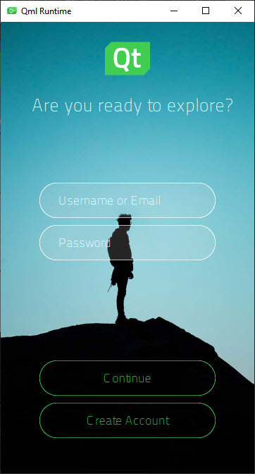
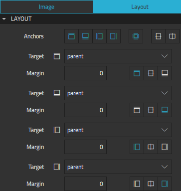
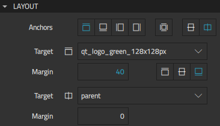
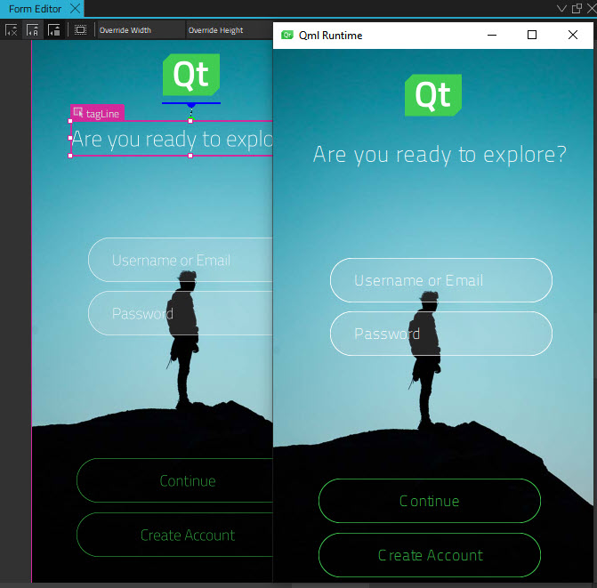
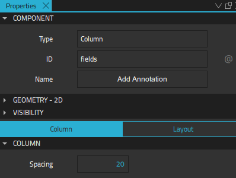
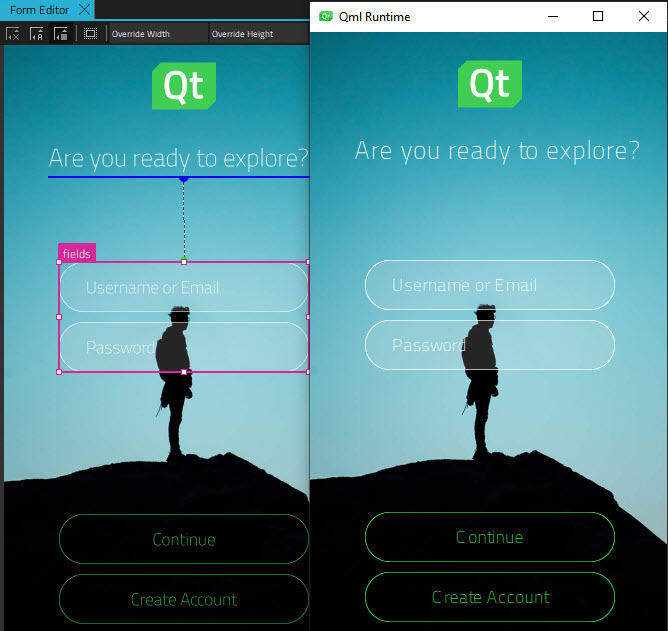

Log In UI - Positioning
Illustrates how to position UI components on pages using anchors and positioners.

Log In UI - Positioning is the second in a series of tutorials that build on each other to illustrate how to use Qt Design Studio to create a simple UI with some basic UI components, such as pages, buttons, and entry fields. The second tutorial in the series describes how to position the UI components on pages to create a scalable UI.
To ensure that the layout is responsive and all the UI components stay in their proper places when you resize the UI on the desktop or on devices with different screen sizes, you will use anchors and positioners.
The starting point for this tutorial is the completed Log In UI - Components project. You can download the project from here.
Additionally, you can download the completed project of this tutorial from here.
The Learn More sections provide additional information about the task at hand.
Anchoring UI Components
First, you will anchor the static page elements, background image (adventurePage), logo (qt_logo_green_128x128px), and tag line (tagLine), to the page.
When you created the project using the project wizard template in Log In UI - Components, the wizard template anchored tagLine to the vertical and horizontal center of the page. Therefore, you will only need to replace the vertical anchor of tagLine with a top anchor and adjust the margins to align it with qt_logo_green_128x128px on the page.
To preview the changes that you make to the UI while you make them, select the (Show Live Preview) button on the 2D view toolbar or press Alt+P.
To anchor component instances on a page:
- Open Screen01.ui.qml for editing in the 2D view.
- Select adventurePage in the Navigator view to display its properties in the Properties view.
- In Properties > Layout, select the
 anchor button to anchor adventurePage to its parent in the Target field. This attaches the background image to the rectangle on all sides. Note: Selecting the anchor button should automatically select the four buttons on the left side of it. If it doesn't, refresh the 2D view.
anchor button to anchor adventurePage to its parent in the Target field. This attaches the background image to the rectangle on all sides. Note: Selecting the anchor button should automatically select the four buttons on the left side of it. If it doesn't, refresh the 2D view.
- Select qt_logo_green_128x128px in Navigator.
- In Properties > Layout, select the and
 anchor buttons to anchor qt_logo_green_128x128px to the top of its parent in the Target field with a 40-pixel margin and to center it horizontally. This attaches the logo to the rectangle at the top, while keeping its horizontal center aligned with that of the rectangle.
anchor buttons to anchor qt_logo_green_128x128px to the top of its parent in the Target field with a 40-pixel margin and to center it horizontally. This attaches the logo to the rectangle at the top, while keeping its horizontal center aligned with that of the rectangle. - Select tagLine in Navigator.
- In Properties > Layout, select the button and then select qt_logo_green_128x128px as Target to anchor tagLine with a 40-pixel margin. This attaches the top of the tag line to the bottom of the logo, while keeping its horizontal center aligned with that of the rectangle.

Note: You can anchor component instances to their parent and sibling components. If a component instance is not listed in the Target field, check that the component instance is located in the correct place in the component hierarchy in Navigator. For more information, see Arranging Components.
- Select File > Save or press Ctrl+S to save your changes.
Your page now should look something like this in the Design mode and live preview:

Using Column Positioners
You will now position the entry fields and buttons in columns to learn another method of positioning components. Then, you will anchor the columns to the page to enable their positions to change when the screen size changes.
To position the fields and buttons as columns:
- Select username and password in Navigator (press and hold the Shift or Ctrl key for multiple selection), and right-click either of them to open a context menu.
- Select Position > Position in Column to position the fields on top of each other in the 2D view.
- Select the column in Navigator and change its ID to fields in Properties.
- In Column > Spacing, set the spacing between the fields to 20 pixels.

- Select login and createAccount, and then select Position > Position in Column to position them in a column.
- Select the button column, change its ID to buttons, and set the spacing between the buttons to 20 pixels, as above.
You will now anchor the field and button columns to the page:
- Select fields in Navigator.
- In Properties > Layout, select the button to anchor the top of the fields column to the bottom of tagLine with a 170-pixel margin.
- Select the button to anchor the column horizontally to its parent.
- Select buttons in Navigator.
- In Properties > Layout, select the button to anchor the button column to the bottom of its parent with a 50-pixel margin.
- Select the button to anchor the column horizontally to its parent.
- Select File > Save or press Ctrl+S to save your changes.
The second iteration of your UI is now ready and should look something like this in the Design mode and live preview:

Learn More
Anchors
In an anchor-based layout, each component instance can be thought of as having a set of invisible anchor lines: top, bottom, left, right, fill, horizontal center, vertical center, and baseline.
Anchors enable placing a component instance either adjacent to or inside of another component instance, by attaching one or more of the instance's anchor lines to the anchor lines of the other component instance. If a component instance changes, the instances that are anchored to it will adjust automatically to maintain the anchoring.
For more information, see Positioning with Anchors.
Positioners
For many use cases, the best positioner to use is a simple grid, row, or column, and Qt Design Studio provides components that will position children in these formations in the most efficient manner possible. For more information about using preset positioners, see Using Positioners.
For more complicated UI designs, you can use components from the Qt Quick Layouts module.
Next Steps
To learn how to add a second page and move to it from the main page, see the next tutorial in the series, Log In UI - States.
Files: